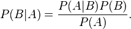

条件概率是指在其他事件已经发生的情况下，一个事件的概率。在下面的例子中，有两个可能发生的事件。 一个球落下的时候，既可能砸到红色的架子上（我们称之为事件A），也可能砸到蓝色的架子上（我们称之为事件B），或者两者都有。
如果我们知道这些事件在整个发生情况中的统计数字，然后给我们一个球，并告诉我们这个球击中红色架子（事件A），它同时击中蓝色架子（事件B）的概率是多少？我们可以通过提供B的条件概率来回答这个问题，因为A已经发生或P（B|A）。

P(B|A) = {{ pOfBGivenA | number:3}} or {{ pOfBGivenA * 100 | number:1}}%
如果我们有一个球，而且我们知道它击中了红色架子，那么它有50.0%的机会也击中了蓝色架子。
P(A|B) = {{ pOfAGivenB | number:3}} or {{ pOfAGivenB * 100 | number:1}}%
如果我们有一个球，而且我们知道它击中了蓝色架子，那么它有50.0%的机会也击中了红色架子。
实际值
预测值
count(A n !B): {{countA}} (击中红色架子但没有击中蓝色架子的球)
count(B n !A): {{countB}} (打到蓝色架子上的球，但没有打到红色架子上）
count(A n B): {{countAB}} 同时击中红色架和蓝色架的球
count(!A n !B): {{countNone}} 既没有击中红色架也没有击中蓝色架的球